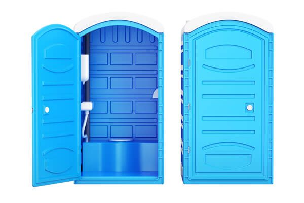

When people search "porta potty rental near Weston," most are looking for exactly this: a standard, self-contained portable toilet that does the job without the extras. It's the unit that shows up on almost every construction site in Broward County, sits at the edge of a backyard remodel, and anchors the far corner of a landscaping crew's staging area for weeks at a time. No frills, no fuss — just a clean, ventilated, fully stocked restroom that's ready the moment it's dropped off.
RapidClean's standard portable toilet rental is our highest-volume service, and that volume is exactly why we've refined it down to a science. Each unit is a non-flushing, holding-tank design with a floor-mounted urinal, a toilet seat and bowl, a paper dispenser, hand sanitizer, a ventilation stack to control odor, and a translucent roof vent that lets in natural light. It's built for the realities of outdoor work — UV-resistant plastic shells, a low center of gravity so wind and foot traffic won't tip it, and a lockable door for basic privacy on an active site.
What's Included With Every Rental
Every standard unit leaves our yard fully serviced and stocked. Nothing about your first day should feel like an afterthought.
- Ventilated holding tank with odor-control chemical treatment
- Toilet paper dispenser and hand sanitizer, pre-stocked
- Interior coat hook and lockable occupancy latch
- Non-slip floor and skid-resistant base for stable placement
- Free delivery and pickup within our standard Weston service radius
- Scheduled weekly servicing included on rentals over one week
Why Weston Chooses RapidClean For Standard Portable Toilet Rental
Same-Day Availability
Most standard orders placed before early afternoon go out the same day — no week-long lead time like some Florida suppliers require.
Real Weekly Service
We pump, rinse, restock and deodorize on a fixed weekly schedule so units stay usable for the entire rental, not just day one.
Flat, Honest Pricing
One quote covers delivery, pickup and standard servicing. If your job runs long, extending is a phone call, not a renegotiation.
Placement Guidance
Our drivers know how to position a unit for stability, drainage and easy servicing access — details that matter on uneven Florida lots.
Local Accountability
You're calling a Weston dispatcher, not a national call center. If something's wrong, we're close enough to fix it fast.

Who This Service Is Built For
- New construction and remodel job sites without indoor plumbing access
- Landscaping and lawn care crews working multi-day properties
- Roofing, paving and fencing crews needing restroom access on the move
- Backyard renovations, pool installs and long-term outdoor projects
- Storage yards, farms and lots that need a permanent-feeling restroom option
- Budget-conscious events where guests won't need flushing fixtures
Sizing & Duration Guide
A quick reference for typical standard portable toilet rental orders — call us if your situation doesn't map neatly to a row below and we'll size it together.
| Scenario | Recommendation | Notes |
|---|---|---|
| Solo contractor or 1–3 person crew | 1 standard unit | Service weekly if the rental runs past 7 days |
| 4–10 person job site crew | 2 standard units | OSHA guidance recommends one toilet per 10 workers |
| Multi-week landscaping or fencing job | 1 unit per crew, relocated as needed | We can reposition units as work zones shift |
| Storage yard or long-term lot | 1 unit per 10 regular users | Ask about our long-term monthly rate |
Placement & Delivery Tips
Give our dispatcher a heads-up about ground conditions when you book — gravel, packed dirt and paved surfaces are all fine, but soft grass or a sloped lot may call for placement adjustments so the unit stays level and stable. Leave roughly four feet of clearance around the door for comfortable entry and for our technician to service the tank without squeezing past equipment or materials. If the site has restricted gate hours or requires sign-in for delivery trucks, mention that when scheduling so we can route the driver accordingly. For active job sites, positioning the unit near the crew's actual work zone — rather than tucked by the site entrance — meaningfully increases how consistently it gets used, which matters both for crew comfort and for keeping the surrounding area cleaner. Finally, if you expect the crew size to grow as the project moves into a new phase, mention that up front; it's easier for us to plan an extra unit into next week's route than to add one on short notice.
Delivering Standard Portable Toilet Rental Across Weston & Florida
Weston's mix of active construction (new builds off Bonaventure, commercial buildout near Weston Town Center) and sprawling residential lots means our standard units cover a lot of ground — literally. Because our trucks stage directly out of Weston, we can usually hit tighter delivery windows here than suppliers dispatching from Miami or Fort Lauderdale. That local footprint extends out through Southwest Ranches, Davie, Sunrise, Plantation, Pembroke Pines and the rest of western Broward County, so if you're comparing porta potty rental options in Florida, proximity alone tends to work in our favor on both price and response time.
No frills. No surprises. Just a clean unit, on time.
Frequently Asked Questions
Pricing depends on rental length, quantity and site access, but most single-unit weekly rentals fall into an affordable, predictable flat rate that includes delivery, pickup and one servicing visit. Call (754) 812-6001 for an exact quote — we typically answer with a number in under five minutes.
Rentals longer than one week receive a scheduled weekly pump-out, rinse, restock and deodorizing visit. Shorter rentals are simply delivered fresh and picked up at the end of the job — no mid-rental service needed.
Most residential and private commercial placements in Weston don't require a permit. Public right-of-way or event placements sometimes do; our dispatcher can tell you in one call whether your specific location needs anything filed.
Yes. Single-day rentals are common for smaller projects, yard sales and one-off tasks. The flat rate simply adjusts for the shorter duration.
Flat, stable ground is ideal — driveways, gravel pads, grass or compacted dirt all work. Let us know about slopes or soft ground when you book so we can plan placement and stabilize the unit correctly.
It can work for casual, low-headcount gatherings, but most hosts prefer our deluxe flushable restroom for guests since it includes a sink and flushing mechanism. We're happy to help you decide based on guest count.